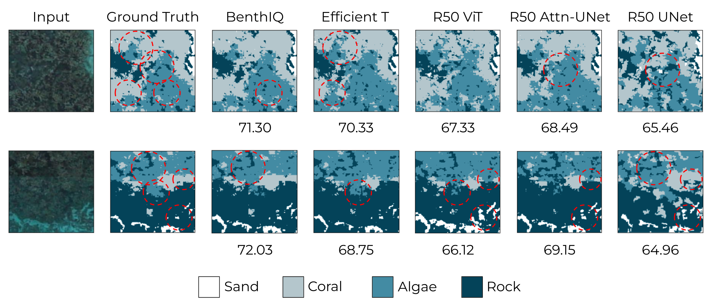
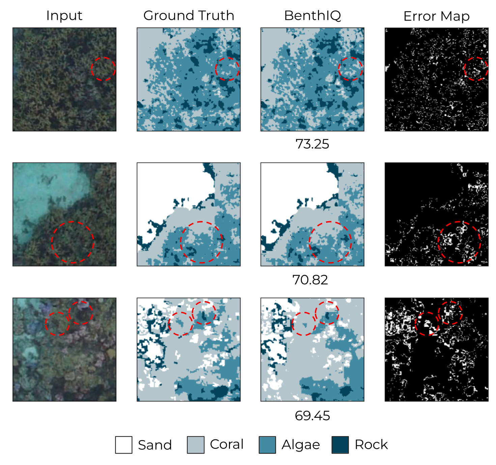

Coral reefs are vital for marine biodiversity, coastal protection, and supporting human livelihoods globally. However, they are increasingly threatened by mass bleaching events, pollution, and unsustainable practices with the advent of climate change. Monitoring the health of these ecosystems is crucial for effective restoration and management. Current methods for creating benthic composition maps often compromise between spatial coverage and resolution. In this paper, we introduce BenthIQ, a multi-label semantic segmentation network designed for high-precision classification of underwater substrates, including live coral, algae, rock, and sand. Although commonly deployed CNNs are limited in learning long-range semantic information, transformer-based models have recently achieved state-of-the-art performance in vision tasks such as object detection and image classification. We integrate the hierarchical Swin Transformer as the backbone of a U-shaped encoder-decoder architecture for local-global semantic feature learning. Using a real-world case study in French Polynesia, we demonstrate that our approach outperforms traditional CNN and attention-based models on pixel-wise classification of shallow reef imagery.
Results
We evaluate model performance by computing the mean Intersection Over Union score (mIOU) across the test set. We present sample model outputs generated by BenthIQ. As anticipated, the error maps on the right demonstrate that the areas of highest uncertainty in model prediction are along the boundaries of substrates. Additionally, we observe that incorrect classifications are most often made around blurry or shadowed regions of the input image.
In the figure below, we provide a qualitative comparison of model performance. We observe that the pure CNN-based methods (the UNet and Attn-UNet) often over-segment or under-segment substrates, likely due to the locality of the convolution operation. This is exemplified in the second row of the figure, where the Attn-UNet undersegments the rock and oversegments the coral. The UNet generates coarse edge predictions for all classes and overclassifies both sample inputs. Amongst the ViT-inspired models, we observe that the R50 ViT undersegments rock and sand and misclassifies coral as algae in the second example. While the Efficient T achieves precise edge predictions as shown in the second row, it often overestimates rock and algal cover in the shadowed regions of the input image, as seen in the first row. We attribute the relative success in edge prediction to the Edge Enhancement Loss used during Efficient T training. Overall, BenthIQ most accurately classifies hard substrates, with fewer misclassifications between coral and algae, which are the most challenging to differentiate.
Our analysis demonstrates that BenthIQ achieves state-of-the-art performance in pixel-wise benthic classification. Our model improves upon traditional CNN-based approaches with the Swin Transformer, which uses the shifted window attention approach to identify finer features and learn long-range semantic information. In the context of benthic composition mapping, this is particularly useful in identifying irregular and small-scale substrates. Unlike existing transformer-based models, our UNet-inspired architecture with skip connections maintains local spatial details, making it effective at capturing high-frequency details even in the presence of downsampling in the encoder. BenthIQ outperforms other models in classifying hard substrates, coral and algae in particular. Its improvement in predictions along the boundaries of substrates further demonstrates its ability to accurately achieve classification on fine spatial scales.
BenthIQ's ability to accurately and precisely classify benthic composition is a crucial asset for reef restoration efforts. We have shown that the model's capacity to learn semantic information on the local and global scale is particularly invaluable in segmenting irregular algal growth and complex reef and rock structures. In improving upon the precision and border prediction accuracy of existing semantic segmentation methods, we can better isolate potential mother colonies to extract coral fragments from and identify rocks or dead substrates that are suitable in size and shape for hosting these fragments in the outplant process. Our accuracy gains are also essential to benthic composition calculations for planning and monitoring restoration. Specifically, identifying areas with diminished live coral cover and high algal concentration can help prioritize outplanting in at-risk reefs. Additionally, in comparing composition maps over broad temporal scales, it is possible to better understand the impact of and respond to environmental stressors such as ocean warming events, pollution, invasive species, or disease.
Acknowledgements
We would like to thank the Samuel P. and Frances Krown Summer Undergraduate Research Fellowship, Caltech's Student-Faculty Programs office, Coral Gardeners, the Caltech Y ACT Award, and Dr. Pietro Perona's Computer Vision Lab for making this work possible. % The data for this analysis was collected and processed by TNC, and will be made publicly available upon completion.
Please send any questions or comments to Rupa Kurinchi-Vendhan.